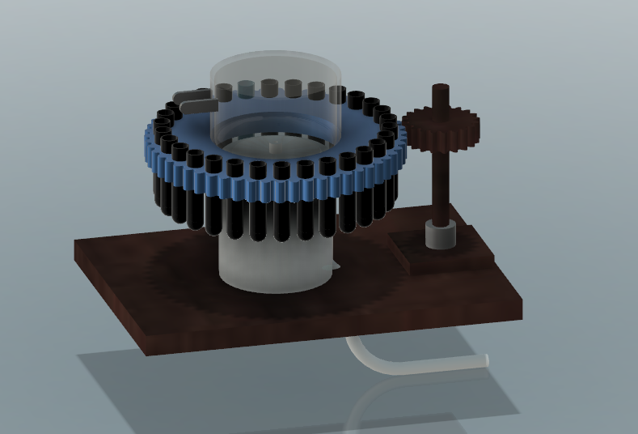
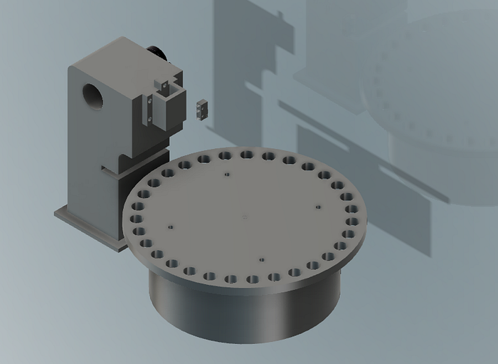
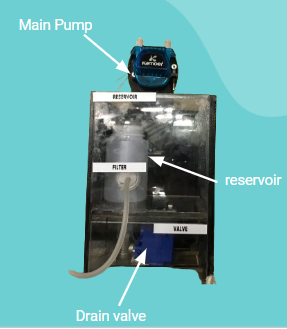
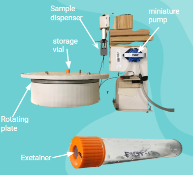
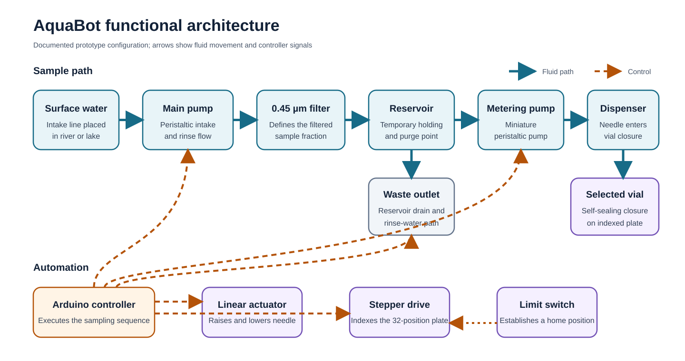
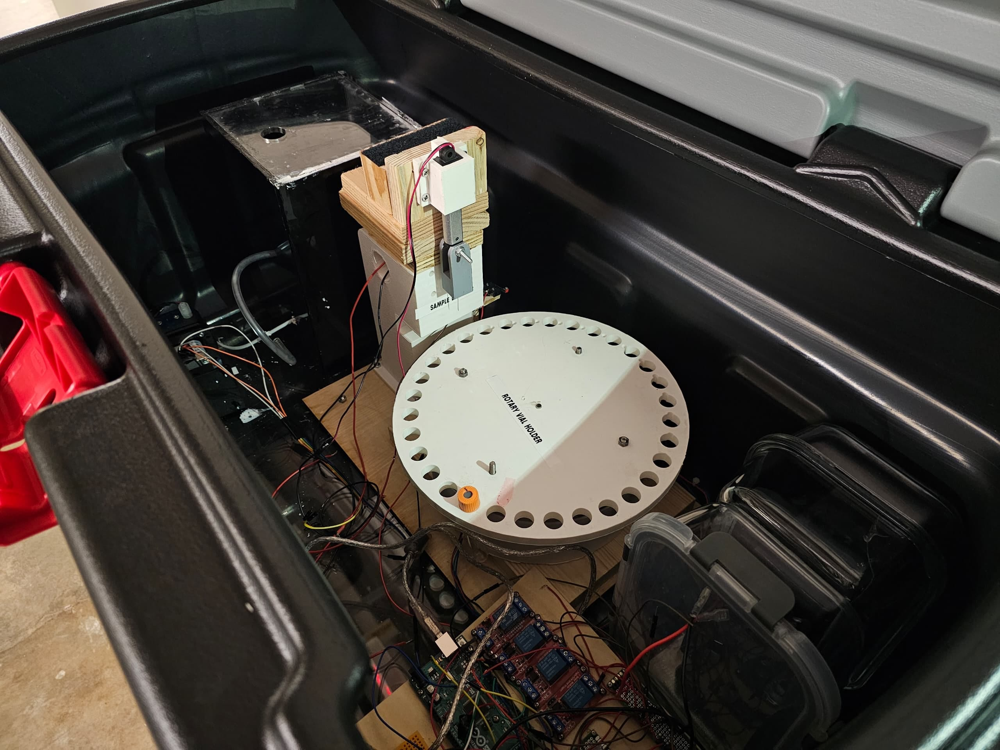

AquaBot: an automated surface-water sampler for time-series trace-element monitoring
Team FlowMetrics: Olorundara Akojede, Deepak
Narayan, Motunrayo Sanyaolu and Brandon Bravo
Summer Experience in Engineering Design, Oshman Engineering Design
Kitchen, Rice University, 2024
Client: Dr Mark A. Torres — mark.torres@rice.edu,
Department of Earth, Environmental and Planetary Sciences
Abstract
Environmental studies that depend on manually collected river samples are often limited in temporal resolution. AquaBot was developed during a seven-week engineering design internship to automate daily surface-water collection from the Lake Houston watershed. The instrument was designed to collect filtered samples for trace-element analysis and retain them until monthly retrieval. Water was drawn from the river by a peristaltic pump, filtered at 0.45 µm and transferred to an intermediate reservoir. A second pump metered the sample through a needle dispenser into an indexed vial. The storage plate accommodated a month-long sampling sequence, and a limit switch provided a repeatable reference for vial positioning. The internship produced an integrated electromechanical prototype that combined the complete fluid path, sample-storage mechanism and embedded controller in a portable case.
Keywords: automatic water sampling; surface water; trace elements; peristaltic pump; embedded control
1. Design objective
River composition changes with rainfall, discharge and activity within the watershed. Detecting these changes requires samples to be collected often enough to resolve the relevant time scale. Manual collection places a practical limit on sampling frequency because researchers must travel to the site for each sample.
Dr Mark Torres and his research group required an economical way to collect river water from the Lake Houston watershed at daily intervals. The samples were intended for later analysis of trace elements. AquaBot addressed this need through an instrument that could remain on the river bank, draw water through an intake line and store each daily sample separately for collection at the end of the deployment.
The project need was formalised as follows:
Develop an autonomous surface-water sampler that collects, filters and stores one river-water sample per day over a 30-day deployment.
2. Requirements definition
Client interviews were used to define the collection workflow and anticipated field conditions. The principal requirements concerned the sampling interval, sample integrity and monthly servicing. These requirements were translated into the engineering responses shown in Table 1.
Table 1. Design requirements and engineering response
| Design requirement | Engineering response |
|---|---|
| One unattended sample per day | Automated sequence controlled by an Arduino-class microcontroller |
| At least 30 separately stored samples | Circular plate with 32 vial positions |
| Up to 15 mL per sample | Timed miniature peristaltic pump feeding the dispenser |
| Filtered sample for trace-element analysis | In-line 0.45 µm filter ahead of the reservoir |
| Control of carryover through the shared fluid path | Three native-water rinse cycles followed by drainage |
| Reduced exposure during storage | Individual vials with pierceable self-sealing closures |
| Monthly retrieval and servicing | Integrated white case to reduce evaporation with accessible sample plate and fluid-handling components |
The sampling protocol was developed around the client's analytical objective. EPA Method 200.8 specifies 0.45 µm filtration for the determination of dissolved elements, followed by nitric-acid preservation of the filtrate to a pH below 2 [1]. AquaBot therefore placed filtration before sample storage, with post-filtration preservation included in the workflow.
3. Concept development
The system was divided into fluid-handling and electromechanical functions. Early concepts considered placing the complete sampler in the water or locating the main assembly on the river bank. The bank-mounted arrangement was selected because or the high currents at lake Houston during certain periods of the year and so that the sample store could remain accessible while only the intake tube entered the river.
Mechanical, pressure-driven and suction-based collection methods were studied. Pump suction provided direct electronic control and allowed the fluid path to be implemented with flexible tubing. Peristaltic pumps were selected because water remains inside the tube and reverse operation can support purging that solves the problem of daily sample uniqueness. Their use in surface-water autosamplers is well established; current US Geological Survey guidance describes battery operation and reversible rinsing as useful features of this pump class [2].
The sample-storage concepts progressed from a geared vial carousel to a directly indexed circular plate. A common dispensing station was retained while the vials moved beneath it. This reduced the number of pumps and fluid connections required for separate daily samples.

Figure 1. Early geared-carousel concept developed during system architecture exploration.

Figure 2. CAD representation of the selected circular vial plate and vertical dispensing station.
4. Prototype design
4.1 Fluid path
The fluid path contained two pumping stages. The main peristaltic pump drew water through the intake and delivered it to the 0.45 µm filter. Filtrate entered a small reservoir that decoupled river intake from sample dispensing. A miniature peristaltic pump then transferred the required volume from the reservoir to the needle.
The reservoir included a drain valve for rinse water. Separating intake from dispensing allowed the higher-capacity pump to fill and flush the upstream path while the smaller pump handled sample delivery.

Figure 3. Prototype fluid-conditioning module containing the main pump, filter, reservoir and drain.
4.2 Sample storage and dispensing
The sample dispenser consisted of a needle attached to a vertically actuated carriage. During each collection cycle, the carriage lowered the needle through the vial closure. The miniature pump then transferred the filtered sample before the needle was withdrawn.
Individual self-sealing vials were used to isolate the daily samples. The same general principle has been applied in published autosamplers, where water is injected through a septum to limit evaporation and exchange with the environment during storage [3]. The narrow vial tubing also reduced the exposed water surface.

Figure 4. Dispensing station showing the rotating plate, needle carriage, miniature pump and representative vial.
4.3 Rotary indexing
The circular plate provided 32 positions around its perimeter. Daily samples occupied the storage positions, while one position was assigned to drainage during dispenser flushing. Plate rotation was produced by a stepper motor.
A limit switch established the home position before the plate advanced. This reference prevented positioning offsets from carrying into later vial locations. Once homed, the controller could relate motor steps to the required sample position.
4.4 Embedded control
An Arduino-class microcontroller coordinated the pumps, drain valve, vertical actuator and plate motor. The collection procedure was encoded as an ordered sequence of fluid transfer and movement. Each vial was addressed once during the monthly cycle.

Figure 5. Functional architecture of the integrated AquaBot prototype.
5. Operating sequence
Each daily cycle began by drawing current river water through the intake. Three rinse cycles were used to replace water remaining in the shared fluid path. The reservoir drain and dedicated waste position allowed this rinse water to leave the system without entering a storage vial.
After flushing, filtered water was retained in the reservoir. The vial plate was referenced and moved to the required daily position. The needle carriage descended, the miniature pump dispensed the sample, and the needle was withdrawn before the plate was prepared for the next collection event.
The resulting sequence was:
intake → filtration → reservoir rinse → vial positioning → sample dispensing → drainage
This architecture converted the laboratory sampling procedure into a repeatable set of fluidic and mechanical operations.
6. Prototype realisation
The design was developed through CAD, physical prototyping and subsystem integration within the seven-week internship. Early mechanism layouts were revised as the reservoir, actuator and vial plate were brought into a common enclosure. The completed assembly contained the upstream fluid module, dispensing station and controller electronics.

Figure 6. Integrated AquaBot prototype inside the portable enclosure.
The prototype demonstrated the complete instrument architecture in one assembly. Water acquisition, filtration, temporary holding and sample allocation were integrated with a deliberate waste path and positional referencing for repeated operation.
7. Engineering contribution
The FlowMetrics project required the client's geochemical workflow to be translated into hardware requirements. The project also provided experience in client-led requirements development, mechanism evaluation and electromechanical integration. The final prototype joined fluid transport with embedded control inside the same system boundary, making the work directly relevant to automated instrumentation in other measurement domains.
8. Development pathway
The next prototype would be prepared for field use through instrumented qualification. Dispensed volume would be measured across the expected intake head while a tracer study would determine how many rinse cycles are required to control carryover. Stored samples would be monitored for evaporative loss, and repeated indexing cycles would quantify needle-to-vial alignment. A month-long endurance run would then exercise the full timing sequence and power system before deployment beside manually collected reference samples.
These experiments follow the same progression used for established autosamplers: the mechanism is first integrated, after which sampling repeatability and agreement with the reference collection method are measured [2].
9. Conclusion
AquaBot translated a need for higher-frequency river monitoring into an integrated automated sampler. The design combined a filtered intake and individually sealed sample storage with an indexed dispensing mechanism. A complete prototype was produced during the internship, demonstrating how a geochemical collection protocol could be implemented through embedded control and physical system design.
References
- US Environmental Protection Agency. “Method 200.8: Determination of trace elements in waters and wastes by inductively coupled plasma-mass spectrometry,” section 8.
- Wilson, T. P., Miller, C. V. and Lechner, E. A. (2024). “Guidelines for the use of automatic samplers in collecting surface-water quality and sediment data.” US Geological Survey Techniques and Methods, 1-D12.
- Hartmann, A., Luetscher, M., Wachter, R., Holz, P., Eiche, E. and Neumann, T. (2018). “GUARD—an automated fluid sampler preventing sample alteration by contamination, evaporation and gas exchange.” Hydrology and Earth System Sciences, 22, 4281–4293.
- Mucciarone, D. A., DeJong, H. B., Dunbar, R. B., Takeshita, Y., Albright, R. and Mertz, K. (2021). “Autonomous submersible multiport water sampler.” HardwareX, 9, e00197.
- Akojede, O. (2024). “2024 SEED Internship Reflection: Academic Learning Experience.”
- Team FlowMetrics (2024). “Engineering Design Process Worksheet.”